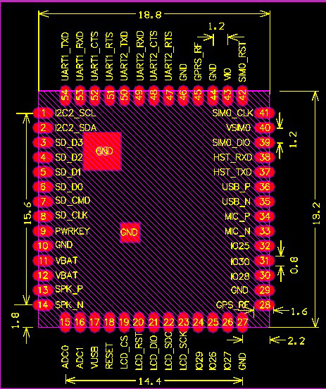

A9G

1. 特征：
- A9所有特征
- 模组内集成GK9501芯片，可实现实时定位，内部与GPRS芯片串口2相连
2. 硬件
2.1. GPRS
使用RDA8955作为主控芯片，内部集成了GSM/GPRS等协议栈
- 规格书：A9G规格书
- 用户手册：A9/A9G用户手册
- 硬件资料文件：A9/A9G硬件资料
- 模组引脚图(硬件资料文件中也包含)(A9和A9G模组引脚兼容)

2.2. GNSS(GPS)
GK9501：一款高性能、高集成度、低功耗、低成本的多模卫星定位导航芯片，支持BDS/GPS/GLONASS/GALILEO/QZSS/SBAS。
- GK9501文档及工具：下载地址: 百度云
- 文件包含：
- 可视化调试工具naviTrack及使用文档
- 固件更新程序及使用文档
- 输入输出格式文档及AGPS文档